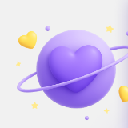

What the reading covers
Current moodColor and density hints that reflect emotional state.
MoodEnergy blockagesWhat feels heavy, noisy, or unresolved right now.
FlowPractical guidanceWhat to do next to feel more balanced.
ActionAura readings are presented as a calm, visual first experience with enough explanation to make the concept feel understandable and useful.
